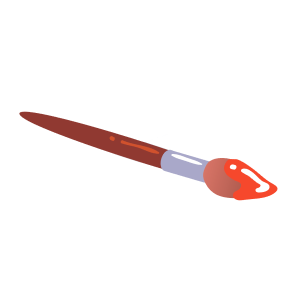
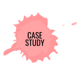
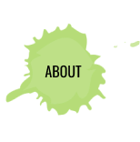

who elevates products by understanding human
behavior to make meaningful experiences for people.

MOST RECENT | AUGUST 2020

CASE STUDY | JULY 2020

CASE STUDY | MARCH 2020


I find great joy in taking ideas and products and crafting inclusive and meaningful experiences for people. My ability to connect with others on a deeper level allows me to empathize and get to the heart of what drives people; thereby, building and fostering brand loyalty.
Why do I stand out?
To get myself through college, I worked in the service industry as a server and held multiple retail positions. It made me value and understand the importance of hard work, respect for people and gave me a sense of humility that I still carry today. Out of necessity, I was forced to be a people person but I found out I was surprisingly good at it. In the corporate world, I built successful relationships and gained leadership experience overseeing large projects. I learned a lot about working with various personalities overcoming budget and timeline constraints and finding creative solutions. Along the way, I would teach myself the necessary skills to continuously keep improving which I still do nearly everyday.
Persona Creation• Ethnography • Field Study • 1:1 Interviews • Diary Studies• Surveys • Competitor Analysis • Heuristic Evaluation • User Flow • User Testing • Markup & Annotations • Data Analysis • Affinity Diagram • Competitor Analysis • Empathy Map • Problem • User Insight
Brainstorming • Storyboarding • Feature Prioritization • Card Storting • Site Map • Layout • Wireframe • Accessible Design • Information Architecture • Copy Writing • Mockups • Aesthetics • Gestalt Principles • Icon Design • Typography • Color Theory • Photography • Branding • Rapid prototyping • Usability Testing • Guerrilla Testing • A/B Testing • Review
XD • Figma • Sketch • InVision • Photoshop • Illustrator • Lightroom • HTML • CSS • Java Script • Bootstrap